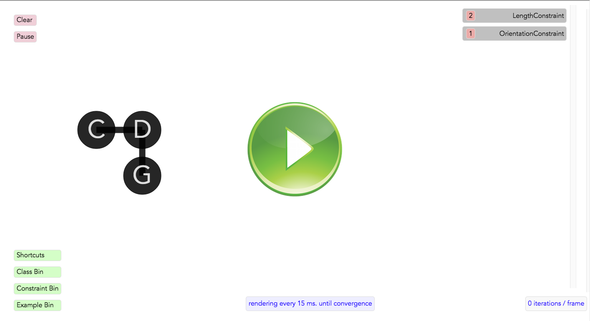

Half-Century Later:
"From Sketchpad61 to Sketchpad14"
Hesam Samimi, Alex Warth
Communication Design Group

Go to Sketchpad14
or
Click below to play!
Be sure to click 'Example bin' to see a list (on the right pane) of all available demos to explore:
